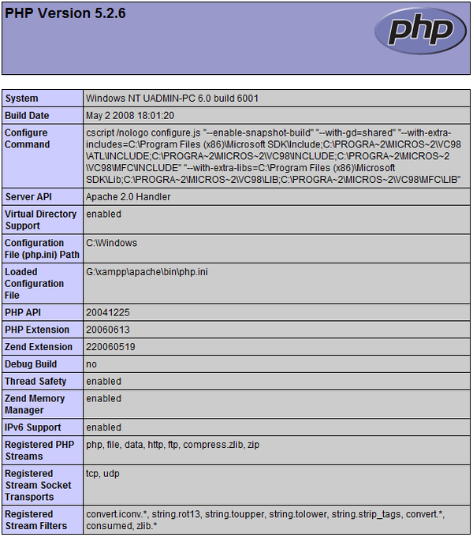

Apache NetBeans
Apache NetBeansLatest release
Настройка среды разработки PHP в Windows
| This tutorial needs a review. You can open a JIRA issue, or edit it in GitHub following these contribution guidelines. |
В данном учебном курсе рассматриваются два способа настройки среды разработки PHP в операционной системе Windows. Первый и наиболее удобный способ состоит в установке и настройке пакета AMP (*A*pache, *М*ySQL, *P*HP). В данном учебном курсе приводится процедура установки пакета XAMPP. Второй способ состоит в установке и настройке каждого компонента по отдельности.
Для работы с этим учебным курсом требуется следующее программное обеспечение и ресурсы.
| Программное обеспечение или материал | Требуемая версия |
|---|---|
Пакет загрузки PHP |
|
Механизм PHP |
Версия 5. Содержится в XAMPP Windows. |
Веб-сервер |
Рекомендуется использовать сервер HTTP Apache версии 2.2. Содержится в XAMPP для Windows. |
Сервер базы данных |
Рекомендуется использовать сервер MySQL 5.0. Содержится в XAMPP для Windows. |
Отладчик PHP (не обязательно) |
Как правило, разработка и отладка выполняются на локальном веб-сервере, в то время как производственная среда размещена на удаленном веб-сервере. Настройка удаленного веб-сервера описана в разделе + Развертывание приложения PHP на удаленном веб-сервере с помощью IDE NetBeans+. Этот учебный курс содержит информацию, необходимую для настройки локального веб-сервера. Поддержка PHP может добавляться к целому ряду локальных веб-серверов (IIS, Xitami и т.д.), но обычно используется сервер HTTP Apache. Сервер HTTP Apache включен в пакет AMP XAMPP, используемый в этом учебном курсе. Сведения относительно установки и настройки автономного сервера HTTP Apache приведены здесь.
Требуемое программное обеспечение
Для создания, выполнения и отладки проектов PHP необходимо следующее программное обеспечение:
-
IDE NetBeans для PHP. Загрузку можно осуществить отсюда.
-
Веб-сервер. Как правило, разработка и отладка выполняются на локальном веб-сервере, в то время как производственная среда размещена на удаленном веб-сервере. Текущая версия позволяет использовать локальный сервер. Последующие версии будут поддерживать использование удаленного сервера с доступом по протоколу FTP. Поддержка PHP может добавляться к целому ряду веб-серверов (IIS, Xitami и т.д.), но обычно используется сервер HTTP Apache. Сведения относительно установки и настройки Apache 2.2 приведены здесь.
-
Механизм PHP. Поддерживается версия PHP5. Загрузку можно осуществить отсюда.
-
Отладчик PHP. IDE NetBeans для PHP позволяет использовать XDebug, но использование отладчика не является обзательным. Из соображений совместимости с PHP5 рекомендуется использовать версию XDebug 2.0 или выше.
-
Сервер базы данных. Существует возможность использования различных серверов базы данных, однако самым популярным из них является сервер MySQL. Загрузку можно осуществить отсюда. NOTE: Рекомендуемая версия продукта: MySQL Server 5.0. В предоставленных документах описывается работа с этой версией.
По завершении установки необходимо выполнить настройку среды в целях обеспечения правильной совместной работы всех программных компонентов.
Можно использовать пакет, содержащий требуемое программное обеспечение, или установить каждый компонент по отдельности.
Использование пакета AMP
В целях автоматической установки всех параметров настройки для механизма PHP, сервера HTTP Apache и сервера базы данных MySQL воспользуйтесь пакетом AMP. В данном учебном курсе приведены указания только для пакета XAMPP-Windows. Справочные сведения по пакету WAMP или другим пакетам приведены в разделе NetBeans XDebug Wiki.
Установка и настройка пакета XAMPP
В этом разделе приведено описание процедур загрузки, установки и настройки пакета XAMPP.
Предупреждение! НЕ используйте XAMPP 1.7.0. В этой версии имеются значительные проблемы с XDebug. Используйте версию 1.7.1 или выше, где эти неполадки устранены.
| Начиная с XAMPP 1.7.2, XAMPP поставляется с PHP 5.3а не с PHP 5.2.x. IDE NetBeans для PHP версии 6.7.x не поддерживает новые функции PHP 5.3. IDE NetBeans для PHP 6.8, которая в настоящее время доступна как сборка разработки, полностью поддерживает PHP 5.3. Также обратите внимание, что установка Xdebug различается для PHP 5.2.x и PHP 5.3. |
-
Загрузите пакет программы установки +XAMPP +. В состав XAMPP Lite не входит XDebug.
-
По завершении загрузки запустите файл
EXE.
В Microsoft Vista функция контроля учетных записей пользователей (UAC) блокирует обновление установщиком PHP настройки службы httpd Apache. На время установки XAMPP следует отключить UAC. Для получения дополнительных сведений обратитесь к разделу Поддержка Майкрософт.
-
Можно установить сервер Apache и сервер базы данных MySQL как веб-службы. Если Apache Server и MySQL установлены как службы, то нет необходимости запускать их вручную с помощью "XAMP Control Panel". Следует учитывать, что установить и удалить эти службы можно с помощью панели управления XAMPP.
-
При использовании самораспаковывающегося архива после его распаковки запустите файл
setup-xampp.batдля настройки компонентов пакета. Программа установки XAMPP запускает этот файл автоматически. -
После настройки откройте панель управления XAMP. Эту панель можно открыть посредством запуска файла
XAMPP_HOME/xampp-control.exeили с помощью значка панель управления XAMPP, автоматически размещаемого на рабочем столе. При открытии панели управления XAMPP следует учитывать, что модули, установленные как службы, уже выполняются.
*Предупреждение. *Иногда в Windows Vista не удается запустить файл xampp-control.exe . В этом случае можно запустить xampp-start.exe .
*Предупреждение. *Файл winmysqladmin.exe , запускаемый кнопкой "Admin" для MySQL, не функционирует. Отображается последовательность сообщений об ошибках, которая может быть остановлена только путем завершения процесса winmysqladmin вручную. Файл winmysqladmin.exe также невозможно запустить из командной строки. Обратитесь к странице http://bugs.xampp.org/view.php?id=71.

-
Флажки "Svc" указывают на то, что модуль устанавливается как служба Windows и автоматически выполняется при запуске системы. Службы Windows устанавливаются и удаляются при установке и снятии флажка "Svc". При удалении службы Windows сам модуль не удаляется, однако необходимо запускать его вручную. Панель управления XAMPP включает в себя кнопки запуска и остановки модулей, а также открытия их консолей администратора.
Проверка установки XAMPP
-
Запустите браузер и введите следующий URL-адрес:
http://localhost. Откроется страница приветствия XAMPP:

-
В целях обеспечения установки серверов Apache и MySQL в качестве служб системы перезапустите операционную систему, запустите браузер и повторно введите URL-адрес
http://localhost. Откроется страница приветствия XAMPP. Обратите внимание на то, что в левом поле страницы приветствия XAMPP имеется меню, посредством которого можно проверить состояние компонентов XAMPP, запуститьphpinfo(), а также воспользоваться другими важными функциями. При выполненииphpinfo()возвращается экран с информацией о настройке компонентов XAMPP.

Установка и включение отладчика XDebug
Для использования отладчика XDebug необходимо настроить стек PHP. Процесс отличается, если используется XAMPP 1.7.1, который включает в себя PHP 5.2.6, или XAMPP 1.7.2, который включает в себя PHP 5.3.
Многие пользователи испытывают трудности при настройке работы XDebug в своих системах. Справочные сведения приведены на вики-страницеи на форуме пользователей редактора NetBeans PHP Editor.
XDebug на XAMPP 1.7.1 (PHP 5.2)
Необходимо скачать XDebug, поместить файл .dll в базовый каталог php и настроить php.ini для поиска и использования данного файла.
-
Загрузите самую последнюю, ориентированную на многопотоковое исполнение версию XDebug, совместимую с вашей версией PHP. Ссылки для загрузки перечислены в разделе "Releases". Скопируйте файл
.dllв каталогXAMP_HOME/php/ext. (XAMPP_HOMEссылается на каталог установки XAMPP или XAMPP Lite, например,C:\Program Files\xamppилиC:\xampplite.) -
Найдите и откройте активный файл
php.iniдля XAMPP. По умолчанию он находится в каталогеXAMPP_HOME/apache/bin. Подтвердите, какой файлphp.iniявляется активным, с помощьюphpinfo()и поиска загруженного файла конфигурации. -
Поскольку оптимизатор Zend блокирует XDebug, оптимизатор требуется отключить. В активном файле
php.iniнайдите следующие строки и удалите или отметьте их как комментарии (для надежности выполните поиск и закомментируйте все свойства, связанные с Zend):
[Zend]
;zend_extension_ts = "C:\Program Files\xampp\php\zendOptimizer\lib\ZendExtensionManager.dll"
;zend_extension_manager.optimizer_ts = "C:\Program Files\xampplite\php\zendOptimizer\lib\Optimizer"
;zend_optimizer.enable_loader = 0
;zend_optimizer.optimization_level=15
;zend_optimizer.license_path =-
Для присоединения XDebug к механизму PHP раскомментируйте следующие строки в файлах
php.ini(добавьте эти строки непосредственно в разделе [Zend]), если они отсутствуют. Добавлены дополнительные примечания.
[XDebug]; Only Zend OR (!) XDebug
zend_extension_ts = "./php/ext/php_xdebug<-version-number>.dll"
; XAMPP and XAMPP Lite 1.7.0 and later come with a bundled xdebug at <XAMPP_HOME>/php/ext/php_xdebug.dll, without a version number.xdebug.remote_enable=1xdebug.remote_host=127.0.0.1xdebug.remote_port=9000
; Port number must match debugger port number in NetBeans IDE Tools > Options > PHPxdebug.remote_handler=dbgpxdebug.profiler_enable=1xdebug.profiler_output_dir="<XAMPP_HOME>\tmp"Установите свойство xdebug.remote_enable в значение 1, а не в значение "true" или другое значение.
| Убедитесь в том, что указанные пути соответствуют расположению соответствующих файлов, как это определено при установке. |
-
Сохраните файл
php.ini. -
Запустите панель управления XAMPP и перезапустите сервер Apache. Дополнительные сведения о настройке XDebug приведены на вики-странице и в документации по XDebug.
Xdebug на XAMPP 1.7.2 (PHP 5.3)
XAMPP 1.7.2 поставляется вместе с соответствующим файлом Xdebug .dll. Для начала использования необходимо только настроить php.ini . Обратите внимание, что все настройки Xdebug сопровождаются поясняющим текстом.
-
Найдите и откройте файл
XAMPP_HOME\php\php.iniдля редактирования. В XAMPP 1.7.2 используется только файлphp.ini -
Найдите строку
zend_extension = "XAMPP_HOME\php\ext\php_xdebug.dll"и удалите символ комментария. -
Найдите строку
xdebug.remote_host=localhostи удалите символ комментария. Измените значение параметраlocalhostна127.0.0.1. -
Найдите строку
xdebug.remote_enable = 0и удалите символ комментария. Измените 0 на 1. -
Найдите строку
xdebug.remote_handler = "dbgp"и удалите символ комментария. -
Найдите строку
xdebug.remote_port = 9000и удалите символ комментария. -
Сохраните файл
php.ini. -
Запустите панель управления XAMPP и перезапустите сервер Apache.
Дополнительные сведения о настройке XDebug приведены на вики-странице и в документации по XDebug.
Установка компонентов по отдельности
Сервер HTTP Apache
-
Загрузите сервер HTTP Apache2.
-
Запустите установочный файл
.msi. Запускается мастер установки. Следуйте указаниям.
В Microsoft Vista не следует устанавливать Apache Server в местоположение по умолчанию, находящееся в папке "Program Files". Все файлы в папке "Program Files" защищены от записи.
-
По завершении установки перезапустите сервер Apache.
-
Для проверки успешности установки запустите браузер и введите следующий URL-адрес:
http://localhost/Откроется страница приветствия Apache:

Устранение проблем
По умолчанию сервер Apache прослушивает порт 80. Однако этот порт, возможно, уже используется другими службами, например Skype. Для разрешения проблемы измените порт, прослушиваемый сервером:
-
Откройте файл настройки веб-сервера Apache
httpd.conf. По умолчанию файл расположен вC:\Program Files\Apache Software Foundation\Apache<version>\conf\. -
Перейдите к строке
Listen 80и замените номер порта: например, на8080. Сохраните файл. -
Перезапустите веб-сервер Apache.
-
Для проверки работоспособности веб-сервера запустите браузер, введите URL-адрес и явно укажите номер порта:
http://localhost:8080
Кроме того, можно также приостановить процессы, прослушивающие порт 80. В окне "Диспетчер задач" выберите соответствующее имя файла и нажмите кнопку "Завершить процесс".
Дополнительные сведения об установке и настройке сервера приведены здесь.
Механизм PHP
-
Загрузите бинарный пакет установщика Windows для выбранной версии PHP5.
*Важно.*Если установщик для нужной версии PHP отсутствует, установите ее вручную из файла .zip. См. раздел Этапы ручной установки в документации php.net.
-
По завершении загрузки запустите установочный файл
.msi. Запускается мастер установки. -
На экране "Каталог конфигурации Apache" укажите каталог, в котором расположен файл
httpd.conf(по умолчанию используется каталогC:\Program Files\Apache Software Foundation\Apache<version>\conf\). Обработка кода PHP включается автоматически. -
При необходимости использования сервера базы данных MySQL выберите вариант "Полная установка" или выберите элементы MySQL и MySQLi в списке "Расширения".
-
После завершения установки перезапустите сервер Apache.
-
Для проверки успешности установки механизма PHP и включения обработки кода PHP в настройке Apache выполните следующие действия:
-
Откройте блокнот или любой другой текстовый редактор. Создайте файл и введите следующий текст:
-
<?php
echo "PHP has been installed successfully!";
?>-
Сохраните файл в папке htdocs с именем
test.php. По умолчанию путь к файлу имеет видC:\Program Files\Apache Software Foundation\Apache<version>\htdocs\test.php -
Запустите браузер и введите следующий URL-адрес:
http://localhost:<port>/test.php. Откроется следующая страница:

Устранение проблем
Если страница не открывается, выполните следующие действия:
-
Перезапустите сервер Apache.
-
Убедитесь, что файл настройки сервера Apache httpd.conf содержит следующие строки:
AddType Application/x-httpd-php .php
LoadModule php5_module "c:/php/sapi/php5apache2_2.dll"-
Если эти строки отсутствуют, добавьте их, сохраните
httpd.confи перезапустите сервер Apache. -
Обновите страницу http://localhost:<port>/test.php.
Сервер базы данных MySQL
Ознакомьтесь с подробными сведениями относительно установки и настройки сервера базы данных MySQL.
XDebug
-
Загрузите XDebug.
-
Установите XDebug в папку
php/. Путь к этой папке необходим для настройки среды.
Настройка среды
-
Если при установке используются настройки по умолчанию, обработка PHP включается автоматически.
-
Для присоединения XDebug к механизму PHP перейдите к файлу
php.iniи добавьте в него следующие строки:
Для механизма PHP 5.2 с ориентацией на многопотоковое исполнение:
zend_extension_ts="<path to the php folder>/php_xdebug-<version-number>.dll"
xdebug.remote_enable=1Для механизма PHP 5.2 без ориентации на многопотоковое исполнение:
zend_extension_nts="<path to the php folder>/php_xdebug-<version-number>.dll"
xdebug.remote_enable=1Для любого механизма PHP 5.3:
zend_extension="<path to the php folder>/php_xdebug-<version-number>.dll"
xdebug.remote_enable=1Некоторые пользователи считают, что необходимо включить в код следующие строки, однако другие пользователи пропускают их:
xdebug.remote_host=127.0.0.1xdebug.remote_port=9000
; Port number must match debugger port number in NetBeans IDE Tools > Options > PHPxdebug.remote_handler=dbgpДополнительные сведения о настройке отладчика XDebug приведена здесь.
| Убедитесь в том, что указанные пути соответствуют именам и расположению соответствующих файлов, как это определено при установке. |
-
Для проверки того, что предварительно установленный механизм PHP поддерживает использование сервера базы данных MySQL выполните следующие действия:
-
Выберите команду "Пуск" > "Панель управления".
-
На экране "Панель управления" выберите параметр "Добавление или удаление программ".
-
На экране "Добавление или удаление программ" перейдите к области "PHP <номер_версии>" и нажмите кнопку "Изменить". Последует запуск мастера настройки PHP. Нажмите кнопку "Далее".
-
На экране "Изменение, исправление или удаление" выберите команду "Изменить" и нажмите кнопку "Далее".
-
На экране "Установка веб-сервера" выберите версию сервера Apache – в рассматриваемом примере используется Apache 2.2.x Module. Нажмите кнопку "Далее".
-
На экране "Каталог конфигурации Apache" укажите каталог, в котором расположен файл настройки Apache
httpd.conf. Нажмите кнопку "Далее". -
На экране "Выбор компонентов для установки" разверните узел "Расширения" и выберите элементы MySQL и MySQLi. Нажмите кнопку "Далее".
-
На экране "Все готово к изменению PHP <номер_версии>" выберите команду "Изменить".
-
На экране "Мастер установки PHP <номер_версии> завершен" нажмите кнопку "Готово".
-
Для отправки комментариев и предложений, получения поддержки и новостей о последних разработках, связанных с PHP IDE NetBeans присоединяйтесь к списку рассылки users@php.netbeans.org.